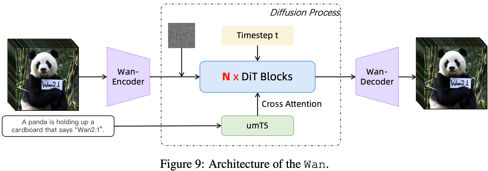
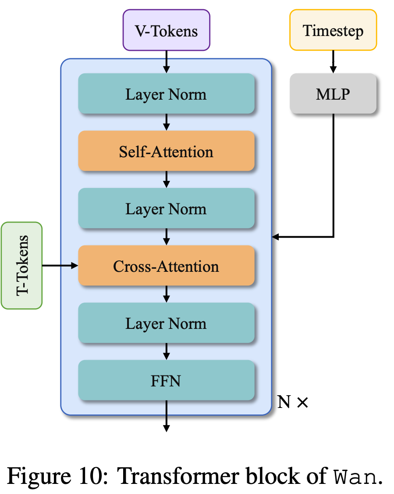
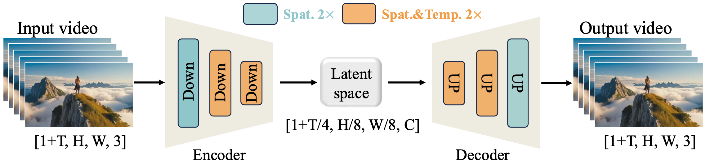

0全景与导读
本文档帮助你系统读懂 Wan2.2 视频生成框架的源码。Wan2.2 是阿里 Wan 团队开源的大规模视频生成模型套件，核心是一个 Latent Diffusion + DiT（Diffusion Transformer）+ Flow Matching 的架构。我们以最易上手的 TI2V-5B（稠密 5B 参数、文/图生视频）为主线，串起所有模块。
A14B 系列（t2v/i2v）是 MoE 双专家（high-noise + low-noise 两个 DiT，按时间步切换），结构更复杂；s2v/animate 还要叠加音频/姿态等额外模态。TI2V-5B 是单一稠密 DiT，一个模型走到底，逻辑最干净，且同时支持「纯文生视频 t2v」和「图生视频 i2v」两条路径，是理解整套框架的最佳切入点。读懂它后再看其它任务只是「加料」。

0.1 仓库结构
# 顶层
generate.py # ★ 唯一 CLI 入口：解析参数 → 选 pipeline → 跑生成 → 存视频
wan/
├── __init__.py # 导出 5 个 pipeline 类（import wan 会加载全部）
├── text2video.py # WanT2V (t2v-A14B, MoE 双模型)
├── image2video.py # WanI2V (i2v-A14B, MoE 双模型)
├── textimage2video.py # ★ WanTI2V (ti2v-5B, 稠密单模型) —— 本文主线
├── speech2video.py # WanS2V (s2v-14B, 音频驱动)
├── animate.py # WanAnimate(animate-14B, 姿态/换人)
│
├── configs/ # ★ 单一事实源：每个任务一份超参 EasyDict
│ ├── shared_config.py # 公共默认（T5/bf16/text_len=512/负向提示词）
│ ├── wan_ti2v_5B.py # ★ TI2V-5B 超参（dim=3072, 30层, vae_stride=4×16×16）
│ └── __init__.py # WAN_CONFIGS / SIZE_CONFIGS / SUPPORTED_SIZES 注册表
│
├── modules/ # ★ 模型积木
│ ├── model.py # ★ WanModel —— DiT 主干（所有任务共用）
│ ├── attention.py # flash_attention 封装（FA3→FA2→SDPA 兜底）
│ ├── t5.py / tokenizers.py # UMT5-XXL 文本编码器 + HF 分词器
│ ├── vae2_1.py # Wan2.1 VAE (stride 4×8×8)，A14B 用
│ ├── vae2_2.py # ★ Wan2.2 VAE (stride 4×16×16 高压缩)，TI2V-5B 用
│ ├── s2v/ , animate/ # 任务专属附加模块
│
├── distributed/ # 多卡：fsdp.py / ulysses.py / sequence_parallel.py
└── utils/ # 调度器(fm_solvers*)、prompt 扩写、save_video 等0.2 五大任务一览
| --task | Pipeline 类 | 结构 | VAE | 条件输入 |
|---|---|---|---|---|
t2v-A14B | WanT2V | MoE 双 DiT (27B/14B激活) | 2.1 (4×8×8) | 文本 |
i2v-A14B | WanI2V | MoE 双 DiT | 2.1 | 文本+图像 |
| ti2v-5B | WanTI2V | 稠密单 DiT (5B) | 2.2 (4×16×16) | 文本(+可选图像) |
s2v-14B | WanS2V | DiT + 音频编码器 | 2.1 | 文本+图+音频 |
animate-14B | WanAnimate | DiT + 姿态/人脸模块 | 2.1 | 姿态+遮罩+参考 |
WanModel（modules/model.py），差异几乎全部体现在 configs/ 的超参和 pipeline 类的条件注入方式上。新增一个模型变体 = 加一份 config + 在 __init__.py 注册 + 在 generate.py 加一个分支。1端到端数据流
1.1 CLI 入口：generate.py
generate.py 做三件事：① 解析+校验参数 → ② 按任务名实例化对应 pipeline → ③ 调 .generate() 拿到视频张量并存盘。
def generate(args):
rank = int(os.getenv("RANK", 0)) # 分布式进程号
world_size = int(os.getenv("WORLD_SIZE", 1))
# 单卡默认开 offload；多卡默认关
if args.offload_model is None:
args.offload_model = False if world_size > 1 else True
cfg = WAN_CONFIGS[args.task] # 查配置表
elif "ti2v" in args.task: # ★ 我们的主线分支
wan_ti2v = wan.WanTI2V(config=cfg, checkpoint_dir=args.ckpt_dir, ...)
video = wan_ti2v.generate(
args.prompt,
img=img, # None=纯文生视频; 有图=图生视频
size=SIZE_CONFIGS[args.size], # (1280, 704)
max_area=MAX_AREA_CONFIGS[args.size],
frame_num=args.frame_num, # 121
shift=args.sample_shift, # 5.0
sample_solver=args.sample_solver, # 'unipc'
sampling_steps=args.sample_steps, # 50
guide_scale=args.sample_guide_scale,# 5.0 (CFG 强度)
seed=args.base_seed,
offload_model=args.offload_model)
if rank == 0:
save_video(tensor=video[None], save_file=..., fps=cfg.sample_fps, # 24
normalize=True, value_range=(-1, 1))WanTI2V.generate() 内部只看一个条件：if img is not None → self.i2v(...)，否则 self.t2v(...)。同一个 5B 模型、同一套权重，靠「是否注入首帧 latent」来区分两种模式。1.2 配置驱动：configs
每个任务的全部超参集中在一份 EasyDict 里，先继承 shared_config.py 再覆盖。这是读懂模型尺寸的「身份证」。
wan_shared_cfg.t5_model = 'umt5_xxl'
wan_shared_cfg.t5_dtype = torch.bfloat16
wan_shared_cfg.text_len = 512 # 文本最大token
wan_shared_cfg.param_dtype= torch.bfloat16
wan_shared_cfg.num_train_timesteps = 1000
wan_shared_cfg.sample_neg_prompt = '色调艳丽，过曝，静态…'
wan_shared_cfg.frame_num = 81ti2v_5B.vae_checkpoint = 'Wan2.2_VAE.pth'
ti2v_5B.vae_stride = (4, 16, 16) # ★ 时4 空16
ti2v_5B.patch_size = (1, 2, 2) # DiT patch
ti2v_5B.dim = 3072 # 隐藏维
ti2v_5B.ffn_dim = 14336
ti2v_5B.num_heads = 24
ti2v_5B.num_layers= 30 # 30个Block
ti2v_5B.sample_steps = 50
ti2v_5B.sample_shift = 5.0
ti2v_5B.frame_num = 121 # ≈5s@24fps这些数字与 hf_download/Wan2.2-TI2V-5B/config.json 完全一致（dim=3072, num_layers=30, num_heads=24, in_dim=48, out_dim=48, model_type="ti2v"）。in/out_dim=48 = VAE 的 z_dim，下文会反复出现。
1.3 TI2V-5B 生成全流程（核心！）
这是整篇文档最重要的一张图。下面以「纯文生视频 t2v，1280×704，121 帧」为例，逐张量追踪形状变化。理解了形状，就理解了整个框架。
["一段文字"] → context: [L_text, 4096] （L_text≤512）
target_shape = (z_dim, (F-1)//4+1, H//16, W//16) = (48, 31, 44, 80)
F: (121-1)/4+1 = 31 帧 latent；H: 704/16=44；W: 1280/16=80
seq_len = ceil(44*80 / (2*2) * 31) = 31 * 880 = 27,280
每帧 (44/2)*(80/2)=22*40=880 个 token，31 帧 → 27280 个 token
noise_pred = uncond + guide_scale * (cond − uncond)
scheduler.step() 用 noise_pred 把 latent 往 t→0 推进一步
# ② latent 目标形状：像素 → 压缩空间
target_shape = (self.vae.model.z_dim, # 48
(F - 1) // self.vae_stride[0] + 1, # 时间: 31
size[1] // self.vae_stride[1], # 高: 44
size[0] // self.vae_stride[2]) # 宽: 80
# ③ DiT 序列长度（patch 后 token 数，向 sp_size 对齐）
seq_len = math.ceil((target_shape[2] * target_shape[3]) /
(self.patch_size[1] * self.patch_size[2]) *
target_shape[1] / self.sp_size) * self.sp_size
# ① 文本编码（条件 + 无条件/负向）
context = self.text_encoder([input_prompt], self.device)
context_null = self.text_encoder([n_prompt], self.device)
# ④ 高斯噪声
noise = [torch.randn(*target_shape, dtype=torch.float32, generator=seed_g, ...)]
# 调度器：50 步时间表
sample_scheduler = FlowUniPCMultistepScheduler(num_train_timesteps=1000,
shift=1, use_dynamic_shifting=False)
sample_scheduler.set_timesteps(sampling_steps, device=..., shift=shift) # shift=5.0
timesteps = sample_scheduler.timesteps
latents = noise
for t in tqdm(timesteps): # ⑤ 50 步去噪
# 给每个 latent token 一个时间步（TI2V 特有：逐 token 时间，支持图生视频混合）
timestep = _expand_timestep_per_token(t, mask2, seq_len)
noise_pred_cond = self.model([latents[0]], t=timestep, context=context, seq_len=seq_len)[0]
noise_pred_uncond = self.model([latents[0]], t=timestep, context=context_null, seq_len=seq_len)[0]
# Classifier-Free Guidance：放大「条件 − 无条件」的方向
noise_pred = noise_pred_uncond + guide_scale * (noise_pred_cond - noise_pred_uncond)
# 调度器推进一步
temp_x0 = sample_scheduler.step(noise_pred.unsqueeze(0), t,
latents[0].unsqueeze(0), return_dict=False)[0]
latents = [temp_x0.squeeze(0)]
videos = self.vae.decode(latents) # ⑥ 解码回像素best_output_size() 把输入图按目标面积裁成 VAE 友好尺寸；② 用 z = self.vae.encode([img]) 把首帧编码成 latent；③ 用 masks_like(..., zero=True) 造一个「首帧位置=0、其余=1」的 mask，每一步去噪后都执行 latent = (1−mask)*z + mask*latent —— 即把首帧 latent 反复钉回去，只让模型生成后续帧。这就是「图像作为第一帧条件」的实现。这一步的精髓：CFG（Classifier-Free Guidance）
模型每步预测两个噪声：一个「看到了 prompt」（cond），一个「看的是负向/空 prompt」（uncond）。最终用 uncond + s·(cond−uncond) 外推——s=guide_scale=5.0 越大越贴合 prompt 但可能过饱和。代价是每步要前向两次 DiT，这是推理时间主要来源。
2文本编码器 UMT5-XXL
文件：wan/modules/t5.py + tokenizers.py。把自然语言 prompt 编码成 DiT 能消费的语义向量序列。
def __call__(self, texts, device):
ids, mask = self.tokenizer(texts, return_mask=True, add_special_tokens=True)
seq_lens = mask.gt(0).sum(dim=1).long() # 每条文本真实长度
context = self.model(ids, mask) # [B, 512, 4096]
return [u[:v] for u, v in zip(context, seq_lens)] # 去掉 padding，返回 [L_i, 4096] 列表attn = q·kᵀ + bias，T5 风格），LayerNorm 是 RMSNorm 变体。这些是 T5 家族的经典设计，Wan 直接复用。注意 --t5_cpu 可让这个 11GB 的编码器常驻 CPU，省显存；--t5_fsdp 在多卡下把它分片。编码完成后若
offload_model 开启，会立即 .cpu() 腾出显存给 DiT。3DiT 主干 WanModel 核心
文件：wan/modules/model.py（546 行，整个框架的心脏）。这是一个 Diffusion Transformer：输入「带噪 latent + 时间步 + 文本」，输出「预测的噪声/速度场」。所有任务共用此类，靠 model_type 和超参区分。
WanAttentionBlock.forward 精确匹配）：带噪 latent x 经 patch_embedding 成为 token，作 Self-Attention 的 Q/K/V；文本 context 经 text_embedding 后只作 Cross-Attention 的 K/V；时间步 t 经 MLP 生成 6 路调制，仅作用于 Self-Attn 与 FFN 的归一化（橙色虚线），不进入 Cross-Attention。最终 Head+unpatchify 还原成与输入同形的速度场。| 组件 | 作用 | 形状变化 |
|---|---|---|
| 3 类 Embedding | 把 latent/时间/文本投到 dim=3072 | 见 3.1 |
| 30 × AttentionBlock | 自注意力(时空) + 交叉注意力(文本) + FFN，全部由时间步「调制」 | [B, L, 3072] 不变 |
| Head | 最后归一化 + 线性投影回 patch | [B, L, 48·prod(patch)] |
| unpatchify | 把 token 序列还原成 latent 立方体 | → [48, 31, 44, 80] |
3.1 三类 Embedding
# A. patch_embedding：3D 卷积把 latent 切块，等价于 ViT 的 patchify
self.patch_embedding = nn.Conv3d(in_dim, dim, kernel_size=patch_size, stride=patch_size)
# in_dim=48 → dim=3072, kernel=stride=(1,2,2)
# B. text_embedding：把 4096 维文本投到 3072
self.text_embedding = nn.Sequential(nn.Linear(4096, dim), nn.GELU('tanh'), nn.Linear(dim, dim))
# C. time_embedding：正弦编码 → MLP；time_projection 再投到 6 份调制参数
self.time_embedding = nn.Sequential(nn.Linear(freq_dim, dim), nn.SiLU(), nn.Linear(dim, dim))
self.time_projection = nn.Sequential(nn.SiLU(), nn.Linear(dim, dim * 6)) # ★ ×6x = [self.patch_embedding(u.unsqueeze(0)) for u in x] # (48,31,44,80) → (3072,31,22,40)
grid_sizes = torch.stack([torch.tensor(u.shape[2:]) for u in x]) # 记下 (F,H,W)=(31,22,40)
x = [u.flatten(2).transpose(1, 2) for u in x] # → (1, 31*22*40=27280, 3072)forward 接收的 t 形状是 [B, seq_len]——每个 latent token 可以有不同的时间步。这让「首帧已知(t=0)、其余帧待生成(t=T)」能在同一次前向里混合处理，正是图生视频的底层机制。时间嵌入因此产生 e0 形状 [B, L, 6, dim]。3.2 AttentionBlock 与 AdaLN 调制
每个 Block 的结构是经典 DiT + AdaLN-Zero：时间步通过 modulation 产生 6 个调制向量，控制自注意力、FFN 前后的「缩放/平移/门控」。
# e: [B,L,6,dim] 时间嵌入；modulation: 可学习的 [1,6,dim]
e = (self.modulation.unsqueeze(0) + e).chunk(6, dim=2) # 拆成 6 份：shift/scale/gate ×2
# ── 自注意力（时空全局注意力 + RoPE）──
y = self.self_attn(self.norm1(x) * (1 + e[1]) + e[0], ...) # scale=e1, shift=e0
x = x + y * e[2] # gate=e2（残差门控）
# ── 交叉注意力（文本条件）+ FFN ──
x = x + self.cross_attn(self.norm3(x), context, context_lens) # query=视频, key/val=文本
y = self.ffn(self.norm2(x) * (1 + e[4]) + e[3]) # scale=e4, shift=e3
x = x + y * e[5] # gate=e5
- Self-Attention：在 27280 个时空 token 间做全局注意力，建模帧内空间 + 帧间时序关系（带 3D RoPE）。
- Cross-Attention：视频 token 作 query，文本 token 作 key/value，把 prompt 语义注入。
- FFN：逐 token 的两层 MLP（3072→14336→3072，GELU-tanh）。
autocast(dtype=float32)），保证数值稳定，这是扩散模型训练稳定性的常见技巧。3.3 注意力实现 + 3D RoPE
注意力底层走 wan/modules/attention.py 的 flash_attention，优先级 FlashAttention-3 → FlashAttention-2 → PyTorch SDPA 兜底。用 varlen 接口处理变长（padding 后用 cu_seqlens 标记真实长度）。
# 把 head_dim 切成 3 段，分别编码 帧/高/宽 三个轴的位置
freqs = freqs.split([c - 2*(c//3), c//3, c//3], dim=1) # 时间/H/W 三段
freqs_i = torch.cat([
freqs[0][:f].view(f,1,1,-1).expand(f,h,w,-1), # 帧轴
freqs[1][:h].view(1,h,1,-1).expand(f,h,w,-1), # 高轴
freqs[2][:w].view(1,1,w,-1).expand(f,h,w,-1)], # 宽轴
dim=-1).reshape(seq_len, 1, -1)
x_i = torch.view_as_real(x_i * freqs_i).flatten(2) # 复数乘 = 旋转3.4 Head 与 unpatchify
x = self.head(x, e) # [B,L,3072] → [B,L,48*1*2*2=192]（再次 AdaLN 调制）
x = self.unpatchify(x, grid_sizes) # token 序列 → latent 立方体
def unpatchify(self, x, grid_sizes):
for u, v in zip(x, grid_sizes.tolist()): # v=(31,22,40)
u = u[:math.prod(v)].view(*v, *self.patch_size, c) # (31,22,40,1,2,2,48)
u = torch.einsum('fhwpqrc->cfphqwr', u) # 重排回空间顺序
u = u.reshape(c, *[i*j for i,j in zip(v, self.patch_size)]) # (48,31,44,80)输出形状回到了 latent 的 (48, 31, 44, 80)，与输入噪声一致——这正是去噪循环里 scheduler.step() 所需要的「预测」。
4高压缩 VAE 2.2
文件：wan/modules/vae2_2.py（1051 行）。这是 TI2V-5B 区别于 A14B 的关键——更激进的压缩比 (4,16,16) 把视频压到极小的 latent，让 5B 模型也能生成 720p/5 秒视频。
encode 入口先 patchify(x, patch_size=2) 做 2×2 像素打包（12=3·2·2 通道），合计 16×16 空间压缩；时间维由 3 段 temporal 下采样里的 2 段实现 4× 压缩。这就是配置里 vae_stride=(4,16,16) 的物理含义。
4.1 因果卷积 CausalConv3d
视频 VAE 必须保证「当前帧只依赖过去帧」（因果性），否则无法支持流式/分块处理。实现方式是只在时间维左侧 padding：
class CausalConv3d(nn.Conv3d):
def __init__(self, *args, **kwargs):
super().__init__(*args, **kwargs)
self._padding = (W, W, H, H, 2*pad_t, 0) # ★ 时间维只往「过去」pad，右侧=0
self.padding = (0, 0, 0)
def forward(self, x, cache_x=None):
if cache_x is not None: # 把上一块的尾帧拼到当前块前面
x = torch.cat([cache_x, x], dim=2)
padding[4] -= cache_x.shape[2]
x = F.pad(x, padding)
return super().forward(x)4.2 分块编解码 + 特征缓存
为了省显存，VAE 把视频沿时间维分块处理（encode 每 4 帧一块，decode 每 1 个 latent 帧一块），块间用 feat_cache 传递边界帧的卷积中间结果，保证拼接处无缝。
def encode(self, x, scale):
self.clear_cache() # 重置每个 CausalConv3d 的缓存槽
x = patchify(x, patch_size=2) # 2×2 像素打包 → 12 通道
t = x.shape[2]; iter_ = 1 + (t-1)//4 # 按 4 帧分块
for i in range(iter_):
out_i = self.encoder(x[:,:, 块i, :,:], feat_cache=self._enc_feat_map, ...)
out = out_i if i==0 else torch.cat([out, out_i], 2)
mu, log_var = self.conv1(out).chunk(2, dim=1) # 高斯分布参数
mu = (mu - scale[0]) * scale[1] # ★ 用预存的 mean/std 归一化（48维）
return mu # 推理只取均值，不采样__init__ 里硬编码了 48 维 latent 各通道的均值和标准差（一长串常数）。encode 后做 (mu−mean)/std 把 latent 归一化到标准尺度（利于扩散），decode 前做逆变换。这是 LDM 里「latent 标准化」的标准做法。编码器/解码器主体是 3D 残差网络：ResidualBlock（双 CausalConv3d + RMSNorm + SiLU）+ AttentionBlock（中间层单头自注意力）+ Resample（上/下采样，含 AvgDown3D/DupUp3D 的 shortcut）。结构对称，encoder 下采样、decoder 上采样。
5流匹配调度器
文件：wan/utils/fm_solvers_unipc.py（UniPC）和 fm_solvers.py（DPM++）。Wan2.2 用的是 Flow Matching 框架（不是 DDPM），调度器负责给出时间步表、并在每步把 latent 往「干净」方向推进。
sigma 从 1（纯噪声）线性降到 0（干净），timestep = sigma × 1000。
sigmas = np.linspace(sigma_max, sigma_min, num_steps) # 均匀 1→0
# shift 把采样重心往「高噪声端」偏移，对视频/高分辨率更友好
sigmas = shift * sigmas / (1 + (shift - 1) * sigmas) # shift=5.0
timesteps = sigmas * num_train_timesteps # ×1000shift=5.0 会把更多采样步数分配到高噪声阶段（视频生成的「大结构」在这里成形）。文档里提到「生成 480p 时建议 shift=3.0」——分辨率越低，shift 应越小。UniPC 是一个多步预测-校正求解器，比朴素 Euler 收敛更快，50 步即可出高质量结果。step() 每步做的事：用 DiT 给出的 noise_pred（速度场）和当前 sigma，外加历史几步的缓存（多步法），解出下一个更干净的 latent。CFG 之后的 noise_pred 就是喂给它的输入。
6CFG 与训练/损失 常见疑问
这一章回答两个高频问题：① CFG 引导的代码在哪、怎么算？② 损失/训练代码在仓库里吗？
6.1 CFG 引导代码详解
CFG = Classifier-Free Guidance（无分类器引导），是扩散模型推理阶段提升「prompt 贴合度」的标准技巧。它不是训练损失，而是采样时对模型输出做的一次外推。
# 每步把 DiT 前向跑两次：一次「看到 prompt」，一次「看到负向/空 prompt」
noise_pred_cond = self.model(latent_model_input, t=timestep, **arg_c)[0] # 条件: context = 真实 prompt
noise_pred_uncond = self.model(latent_model_input, t=timestep, **arg_null)[0] # 无条件: context_null = 负向 prompt
# ★ CFG 外推：沿「条件 − 无条件」方向放大 guide_scale 倍
noise_pred = noise_pred_uncond + guide_scale * (noise_pred_cond - noise_pred_uncond)数学形式与直觉
v_θ(x_t, t, c)，则 CFG 的引导预测为：
v_guided = v_θ(x_t, t, ∅) + s · [ v_θ(x_t, t, c) − v_θ(x_t, t, ∅) ]
└─ 无条件(空/负向) ─┘ └────── 条件相对无条件多出来的「方向」──────┘
s = guide_scale (TI2V 默认 5.0)- s = 1：退化为普通条件采样（没有额外引导）。
- s > 1：放大 prompt 的影响，越大越贴合文字，但过大会过饱和/失真。TI2V-5B 默认
5.0。 - 「无条件」用的是负向 prompt（
context_null= config 里那串中文负向提示词，如「过曝、模糊、畸形…」），所以 CFG 同时起到「靠近正向、远离负向」的双重作用。
offload_model 模式下会在两次前向之间 torch.cuda.empty_cache()（见 i2v 分支 583/587 行）。guide_scale 是一个 (low, high) 元组。text2video.py:343 里按时间步选用：高噪声阶段用 guide_scale[1]（high-noise 专家），低噪声阶段用 guide_scale[0]。TI2V-5B 是稠密单模型，全程一个标量 5.0。6.2 损失计算 （该仓库仅推理）
真实训练损失：Flow Matching MSE
从调度器能反推出训练目标。Wan2.2 用 Flow Matching，调度器里写死了 prediction_type="flow_prediction"：
sigma_t = self.sigmas[self.step_index]
if self.config.prediction_type == "flow_prediction":
x0_pred = sample - sigma_t * model_output # ★ model_output 是「速度场 v」由 x0 = x_t − σ_t·v 反推：模型输出的 v 就是从干净数据指向噪声的速度场。对应的训练损失是标准的 Flow Matching（Rectified Flow）MSE：
# 训练时（不在本仓库，仅示意）：
x_0 = VAE.encode(真实视频) # 干净 latent
noise = randn_like(x_0) # 高斯噪声
σ_t ~ 采样一个 (0,1) 的噪声水平
x_t = (1 − σ_t) · x_0 + σ_t · noise # 线性插值构造带噪样本
v_target = noise − x_0 # 真实速度场（从 x_0 指向 noise）
v_pred = WanModel(x_t, t, context) # 模型预测
L = ‖ v_pred − v_target ‖² # ★ Flow Matching MSE 损失noise_pred（CFG 之后的 v_guided）就扮演训练时 v_pred 的角色——只不过推理时不再算 loss，而是用 x0_pred = x_t − σ_t·v 把 latent 往干净方向推进一步（UniPC step()）。理解了这一点，训练和推理就闭环了。7A14B 系列：MoE 双专家 进阶
前面用 TI2V-5B 把整套框架讲透了。t2v-A14B 在主干上完全复用同一个 WanModel，只是把它的「容量」和「调度方式」升级成了 MoE 双专家。本章只讲它与主线的差异点——读懂差异即读懂 A14B。
- 更大的稠密 DiT：
dim=5120, num_layers=40, num_heads=40（TI2V 是 3072/30/24）。 - 两个 DiT 专家：
high_noise_model+low_noise_model，按扩散时间步在boundary处切换——这就是「27B 总参 / 14B 激活」的 MoE 含义。 - 用 Wan2.1 VAE（压缩比 4×8×8，比 TI2V 的 4×16×16 低），所以 latent 更大、
in_dim=16而非 48。
7.1 配置与结构对比
把 t2v-A14B 与主线 ti2v-5B 的关键超参并排看，差异一目了然（数据来自 configs/wan_t2v_A14B.py 与 wan_ti2v_5B.py）：
| 超参 | ti2v-5B（主线） | t2v-A14B |
|---|---|---|
| pipeline 类 | WanTI2V | WanT2V |
| DiT 结构 | 稠密单模型 | MoE 双专家（high+low） |
dim | 3072 | 5120 |
num_layers | 30 | 40 |
num_heads | 24 | 40 |
ffn_dim | 14336 | 13824 |
| VAE | 2.2 (4×16×16) | 2.1 (4×8×8) |
latent 通道 in_dim | 48 | 16 |
boundary | —（无切换） | 0.875 |
sample_guide_scale | 5.0（标量） | (3.0, 4.0) |
sample_shift | 5.0 | 12.0 |
sample_steps | 50 | 40 |
7.2 双专家加载与时间步切换
加载： pipeline 的 __init__ 里用 from_pretrained(..., subfolder=...) 加载两个子目录的权重（text2video.py:101-117）：
self.low_noise_model = WanModel.from_pretrained(checkpoint_dir, subfolder='low_noise_model')
self.high_noise_model = WanModel.from_pretrained(checkpoint_dir, subfolder='high_noise_model')
self.boundary = config.boundary # t2v: 0.875，i2v: 0.900切换： 每个去噪步先根据当前时间步 t 选择专家，并（在 offload 模式下）把不用的那个换出显存（_prepare_model_for_timestep）：
def _prepare_model_for_timestep(self, t, boundary, offload_model):
if t.item() >= boundary: # 高噪声阶段
required_model_name = 'high_noise_model'
offload_model_name = 'low_noise_model'
else: # 低噪声阶段
required_model_name = 'low_noise_model'
offload_model_name = 'high_noise_model'
if offload_model or self.init_on_cpu: # 把不用的专家挪到 CPU，用到的挪到 GPU
getattr(self, offload_model_name).to('cpu')
getattr(self, required_model_name).to(self.device)
return getattr(self, required_model_name)boundary = self.boundary * self.num_train_timesteps # 0.875 × 1000 = 875
for t in tqdm(timesteps):
# ★ 差异1：每步动态选专家
model = self._prepare_model_for_timestep(t, boundary, offload_model)
# ★ 差异2：guide_scale 按阶段取元组的不同分量
sample_guide_scale = guide_scale[1] if t.item() >= boundary else guide_scale[0]
noise_pred_cond = model(latent_model_input, t=timestep, **arg_c)[0]
noise_pred_uncond = model(latent_model_input, t=timestep, **arg_null)[0]
noise_pred = noise_pred_uncond + sample_guide_scale * (noise_pred_cond - noise_pred_uncond)
# scheduler.step() 之后与 TI2V 完全一致8分布式：FSDP + Ulysses 序列并行
文件：wan/distributed/。单卡能跑 TI2V-5B，但多卡能近线性加速。两种正交的并行策略：
| 策略 | 开关 | 切什么 | 解决什么 |
|---|---|---|---|
| FSDP (全分片数据并行) | --dit_fsdp--t5_fsdp | 切模型参数到各卡 | 单卡放不下大模型 → 省显存 |
| Ulysses (序列并行) | --ulysses_size N | 切序列长度(27280个token)到各卡 | 加速注意力 → 提速 |
if use_sp: # 把每个 Block 的注意力和整个 forward 替换成 SP 版本
for block in model.blocks:
block.self_attn.forward = types.MethodType(sp_attn_forward, block.self_attn)
model.forward = types.MethodType(sp_dit_forward, model)# 每张卡只持有 1/N 的序列
x = torch.chunk(x, get_world_size(), dim=1)[get_rank()]
# 自注意力时通过 all-to-all 通信交换，使每卡看到全序列但只算 1/N 的 head（Ulysses 思想）
x = distributed_attention(q, k, v, seq_lens, window_size=...)
# 算完 head 后再 gather 回完整序列
x = gather_forward(x, dim=1)--ulysses_size 必须 等于进程数（world size） 且能 整除 num_heads。TI2V-5B 的 num_heads=24，所以 ulysses_size 可取 2/3/4/6/8。8 卡跑 720p 时 --ulysses_size 8 合法（24÷8=3）。10实战运行命令
单卡冒烟测试（快速验证环境）
export TOKENIZERS_PARALLELISM=false
CKPT=/path/to/hf_download/Wan2.2-TI2V-5B
python generate.py \
--task ti2v-5B --size '1280*704' --ckpt_dir "$CKPT" \
--convert_model_dtype --base_seed 42 \
--frame_num 25 --sample_steps 15 \ # 调小加快
--save_file outputs/ti2v_smoke.mp4 \
--prompt "两只在打架的猫"单卡全质量（121帧 / 50步 / 约5秒视频）
python generate.py \
--task ti2v-5B --size '1280*704' --ckpt_dir "$CKPT" \
--convert_model_dtype --base_seed 42 \
--save_file outputs/ti2v_cats_full.mp4 \
--prompt "两只在打架的猫"
# 图生视频：追加 --image examples/i2v_input.JPG8 卡加速（FSDP + Ulysses，推荐）
torchrun --nproc_per_node=8 generate.py \
--task ti2v-5B --size '1280*704' --ckpt_dir "$CKPT" \
--dit_fsdp --t5_fsdp --ulysses_size 8 --base_seed 42 \
--save_file outputs/ti2v_cats_8gpu.mp4 \
--prompt "两只在打架的猫"A14B 系列（MoE 双专家）运行命令
# 文生视频 t2v-A14B（ckpt 目录须含 low_noise_model/ high_noise_model/ 两个子目录）
python generate.py --task t2v-A14B --size '1280*720' \
--ckpt_dir ./Wan2.2-T2V-A14B --offload_model True --convert_model_dtype \
--prompt "..."
# 8 卡加速（num_heads=40，ulysses_size 须整除 40，可取 2/4/5/8）
torchrun --nproc_per_node=8 generate.py --task t2v-A14B --size '1280*720' \
--ckpt_dir ./Wan2.2-T2V-A14B --dit_fsdp --t5_fsdp --ulysses_size 8 --prompt "..."720*1280 / 1280*720 / 480*832 / 832*480（见 SUPPORTED_SIZES）。注意 A14B 的 num_heads=40，所以 --ulysses_size 合法值是 2/4/5/8（须整除 40），与 TI2V 的 24 不同。常用参数速查表
| 参数 | 说明 |
|---|---|
--size '1280*704' | 分辨率（ti2v-5B 仅支持 1280*704 / 704*1280） |
--frame_num | 帧数，必须是 4n+1（默认 121） |
--sample_steps | 采样步数（默认 50，越多越精细越慢） |
--sample_shift | 噪声调度偏移（默认 5.0；480p 建议 3.0） |
--sample_guide_scale | CFG 强度（默认 5.0） |
--base_seed | 随机种子（固定可复现） |
--use_prompt_extend | 用 Qwen/DashScope 自动扩写 prompt |
11术语表
核心术语
| 术语 | 含义 |
|---|---|
| Latent / latent 空间 | VAE 压缩后的低维表示。TI2V 把 1280×704×121 像素压成 80×44×31×48 的张量，扩散在这个小空间里进行，省算力。 |
| DiT | Diffusion Transformer，用 Transformer 替代 U-Net 做扩散去噪主干。Wan 的 WanModel 即 DiT。 |
| Flow Matching | 一类生成式框架，学习从噪声到数据的速度场，sigma 从 1→0。比 DDPM 采样更高效。 |
| CFG | Classifier-Free Guidance，用「条件 vs 无条件」预测之差放大 prompt 影响。每步两次前向。 |
| AdaLN-Zero | 时间步通过调制向量（shift/scale/gate）控制每个 Block 的归一化，是 DiT 注入条件的标准方式。 |
| RoPE (3D) | 旋转位置编码，这里按帧/高/宽三轴分别编码，给注意力提供三维位置感。 |
| MoE 双专家 | A14B 任务有 high-noise / low-noise 两个 DiT，按时间步 boundary 切换（TI2V-5B 不用，是稠密单模型）。 |
| FSDP / Ulysses | 分别切「模型参数」/「序列长度」的两种多卡并行，可叠加使用。 |